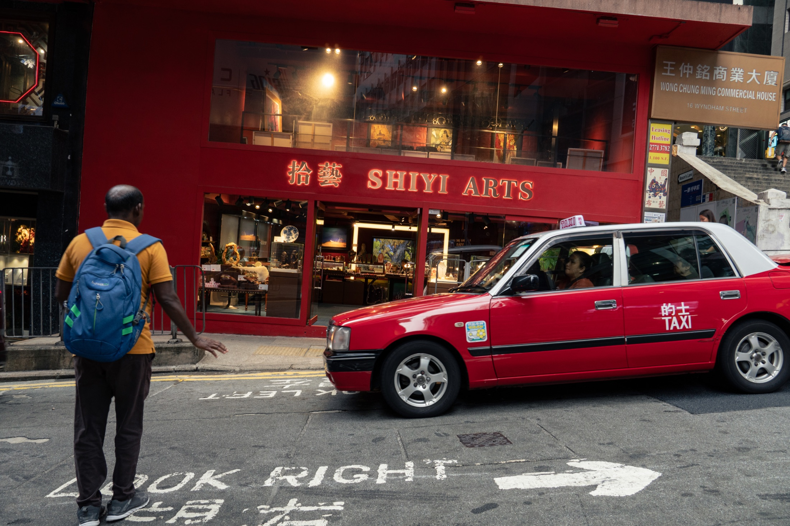
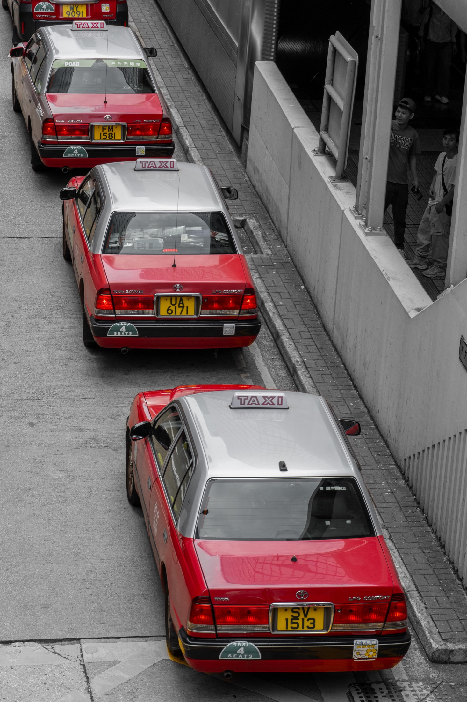
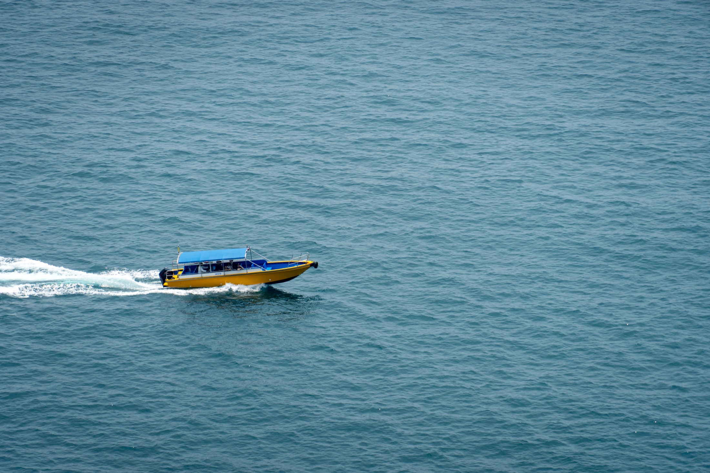
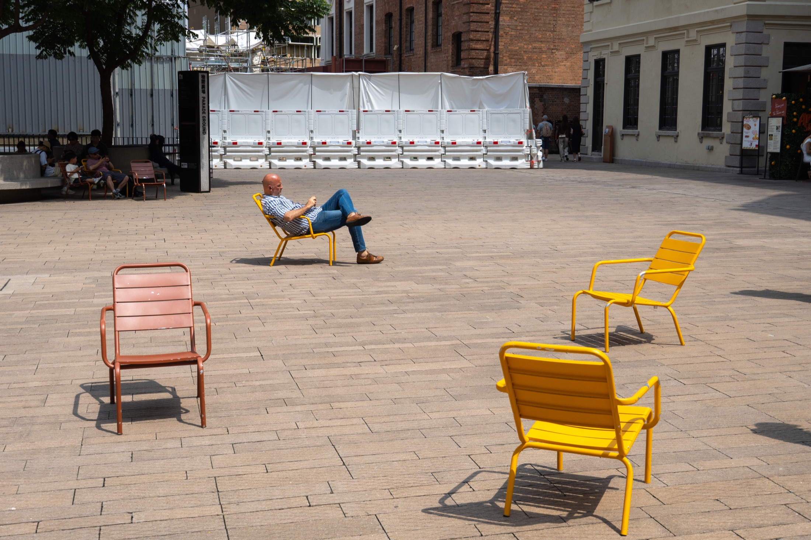
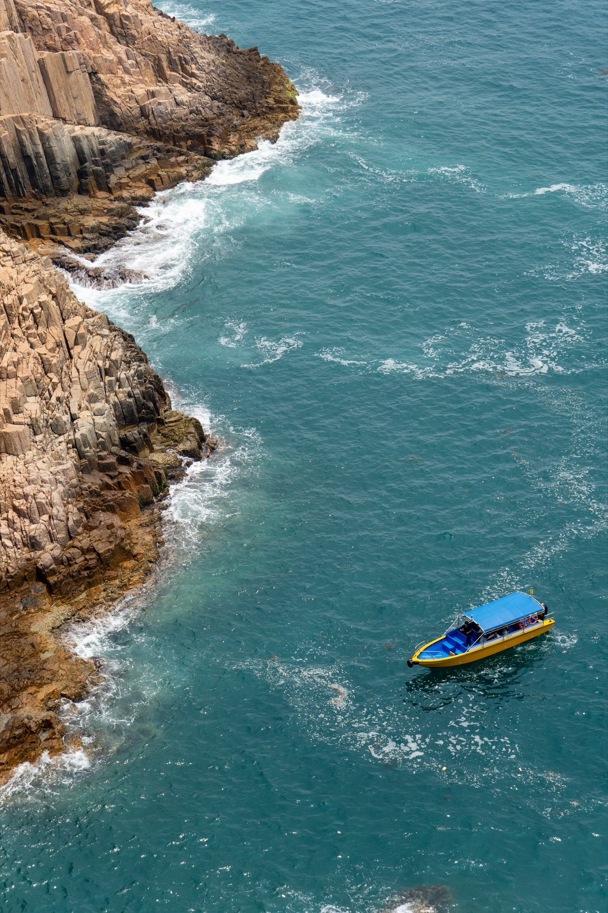

我是 George Fan。这里收录我在不同地方拍摄的照片，也会放一些一路上写下的文字。
从城市街道到海岸山径，先挑出几张我想留在首页的照片。



从这里进入不同地点的作品集，按自己的节奏慢慢浏览。

摄影让我有理由慢一点，注意那些原本会擦肩而过的画面。
我是 George Fan。这里会继续收录旅途中拍下的地方，也会写下走过之后仍会想起的细节。
有些瞬间适合拍下来，有些适合写下来。这里也会慢慢收录文章。